A personal money tracker that lives on a phone's home screen. It answers one question first: how much can I actually spend this month, after cards, instalments and subscriptions are paid?
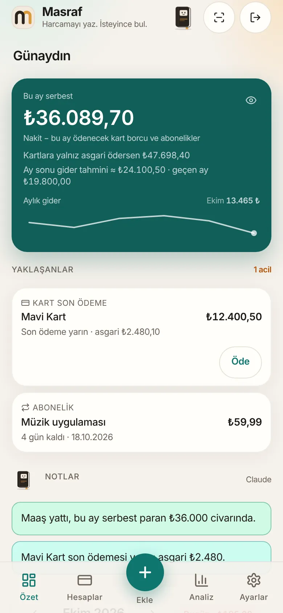
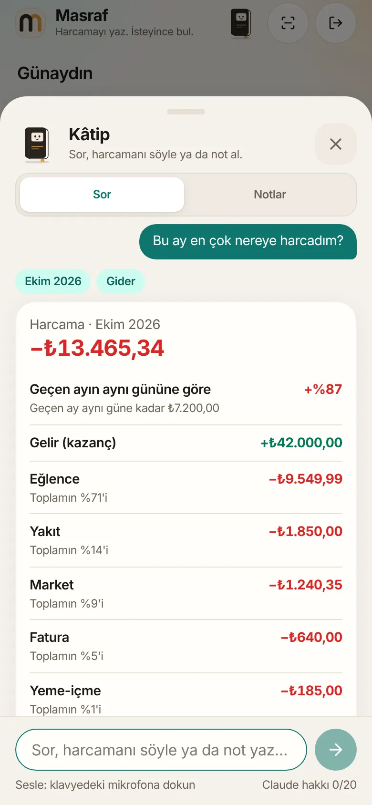
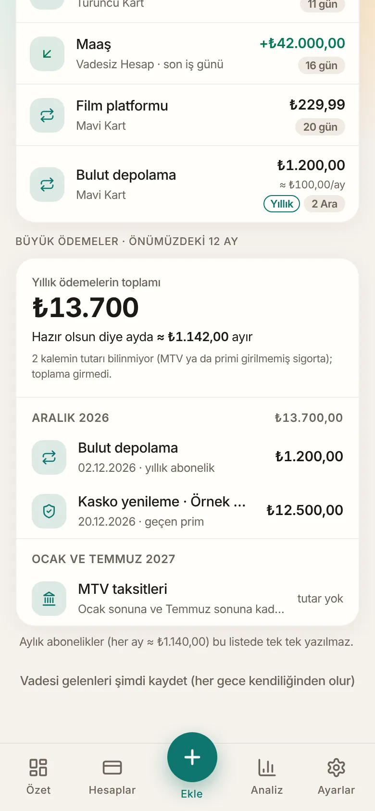
Most money apps tell you what you spent. I wanted to know what I can still spend, in a household with two credit cards, two overdraft accounts, a loan, instalment purchases and subscriptions that renew on different days. A spreadsheet needed hand-editing every week and never knew a card's due date.
So I made the app around that one question and let everything else (accounts, instalments, reminders, charts) serve it. It runs on my own phone every day, which keeps the feature list honest.
The top card shows what is left to spend this month. It subtracts the card bills due this month and the subscriptions still to be charged, and it shows the smaller figure you would have if you only paid the card minimums.
The app is in Turkish. "Bu ay serbest" means "free this month".
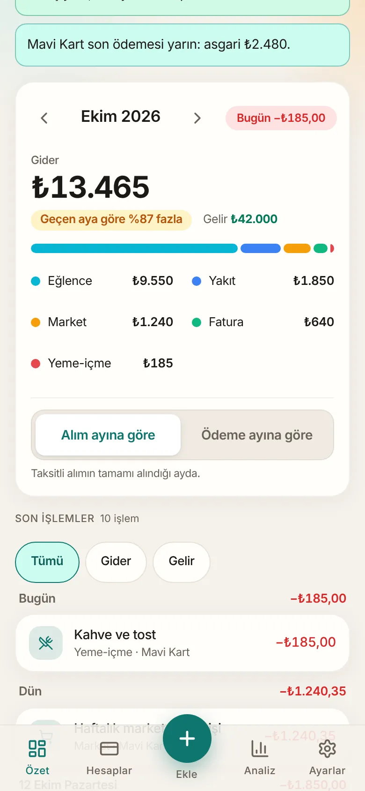
Each account type behaves the way its bank does. Credit cards track debt and remaining limit, overdraft accounts spend cash first and debt second, loans count down their instalments, and savings accounts are kept out of the spendable total.
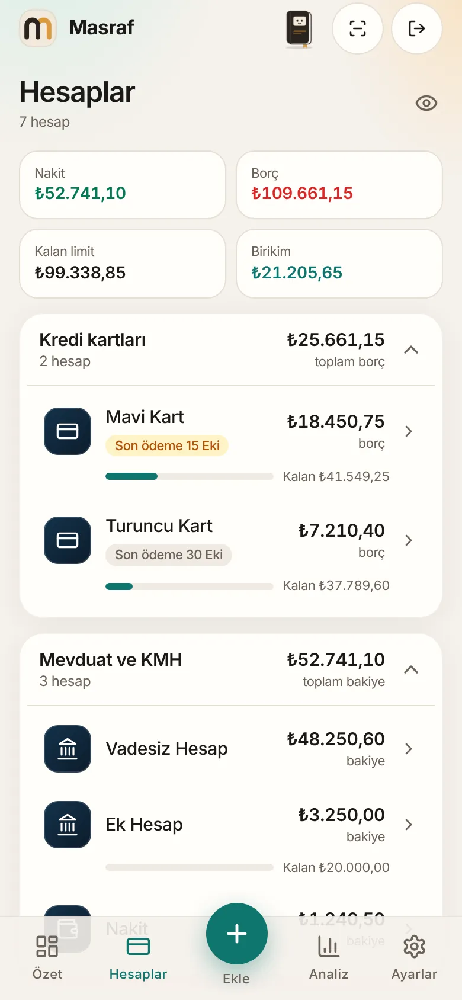
Pick a month and see its spending sorted by size, with each category's share and how it compares with the previous month. A toggle switches between the month a purchase was made and the month its card payment lands, which matters as soon as instalments exist.
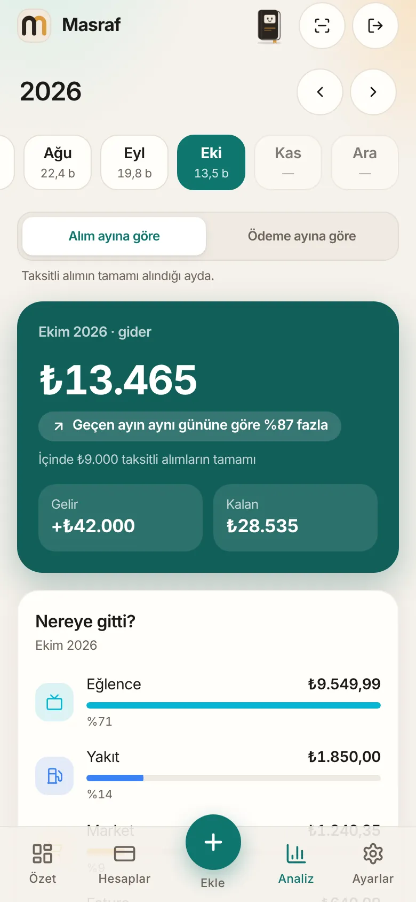
Type an amount, scan a receipt, record a payment between accounts, or log a fuel stop. Accounts and categories are large tap targets, the last account is remembered, and a warning appears if the amount is more than the card's remaining limit.
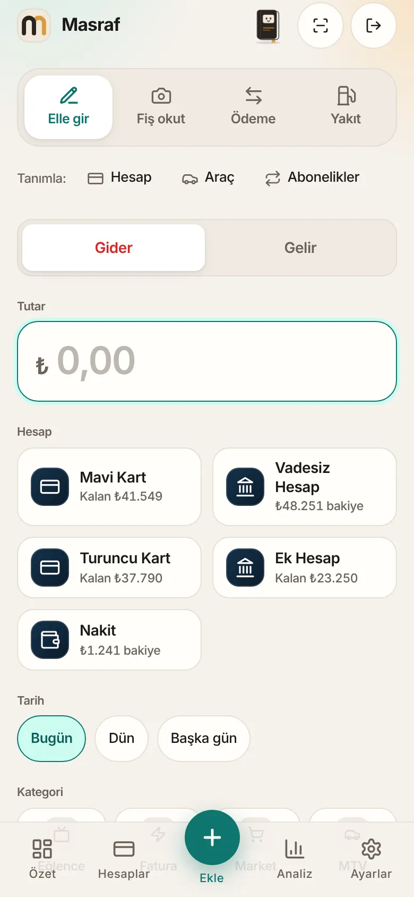
Monthly or yearly, charged to cards or accounts. Yearly items appear 30 days before renewal with a "renew?" prompt, and a twelve-month calendar adds up insurance, annual fees and vehicle tax so the month they hit is no surprise.
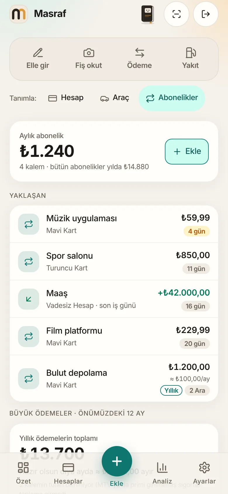
Kâtip, the in-app assistant, answers questions about the user's own accounts: spending, statements, upcoming payments, net worth. It is rule-based first. The language model only helps classify a sentence it cannot parse, and it never computes a figure.
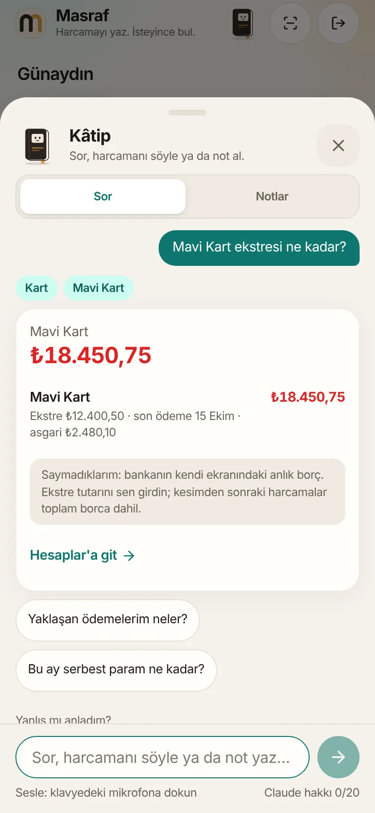
A light paper theme, a warm mid-dark theme and a plum theme. Colours are defined once as tokens, a lint rule rejects raw colour values, and animations play once and respect the reduced-motion setting.
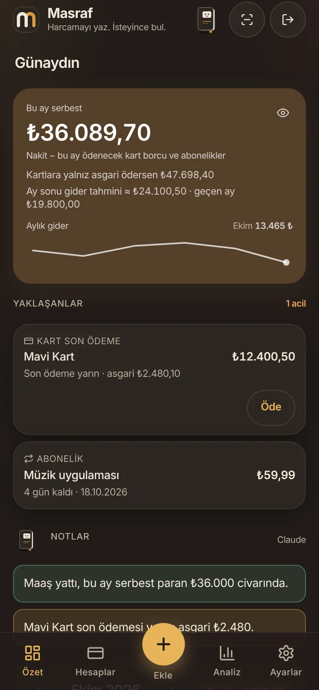
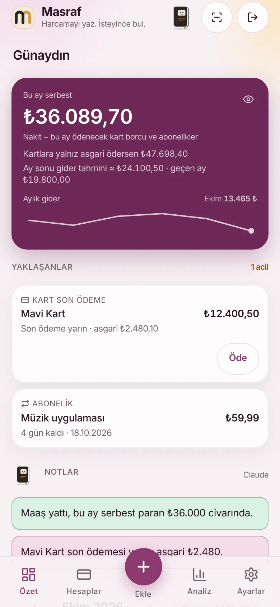
A number field dropped the Turkish decimal comma, so 12.345,67 was saved as 12,35. It was caught during real use. Amount fields are now text inputs with their own parser, and a test covers every format.
Daily savings interest was reproduced from a formula and checked against seven days of real bank statements until the totals matched exactly. When the bank changed the rate, the difference showed up the same week and was corrected.
A styling class that was never defined produced no CSS and no error, so dialogs had no background. The fix was a check that fails the build when a class has no style behind it.
The notes card fired a dozen parallel AI requests while data was still loading. Looking at the request log, not the code, found it. It now waits for the data and shares one request. Lesson: count calls before you pay per call.
Every balance change goes through a Postgres function in a single transaction. The browser never calculates a balance, and an audit function can prove the stored totals match the ledger.
Row-level security on every table, no anonymous access, email one-time-code sign-in, a hashed on-device PIN that signs out after five misses, and security headers. Hiding something on screen is never the protection.
Pure helpers for dates, instalments, statements and the assistant's sentences are covered by unit tests, and the SQL has its own suite that CI runs against Postgres 16 on every push.
Bank statement PDFs go only to Claude, never to a free-tier model that may be reviewed by people. The assistant sends the user's sentence, not their figures. Card numbers, expiry dates and CVVs are deliberately never stored.
A weekly encrypted backup is emailed to the owner, and a restore screen opens it with the passphrase. A backup that cannot be restored is not a backup.
Designed at 390 px wide: no sideways scroll, tables turn into cards, large tap targets, and a home-screen install with an offline shell.
Built with Claude. The product decisions, the real-world money rules and the testing on a real phone are mine. The code was written with Claude as a pair programmer, in short branches with tests and a changelog for every release.
Screens use invented data. Account names, amounts and the vehicle shown here are made up for this page. The app's interface is in Turkish because it was built for a Turkish household and Turkish banks.